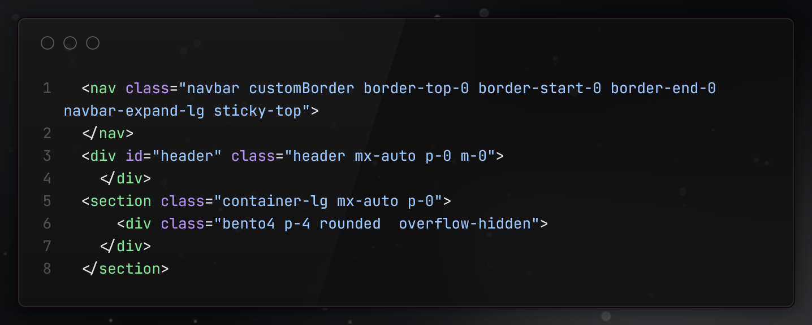
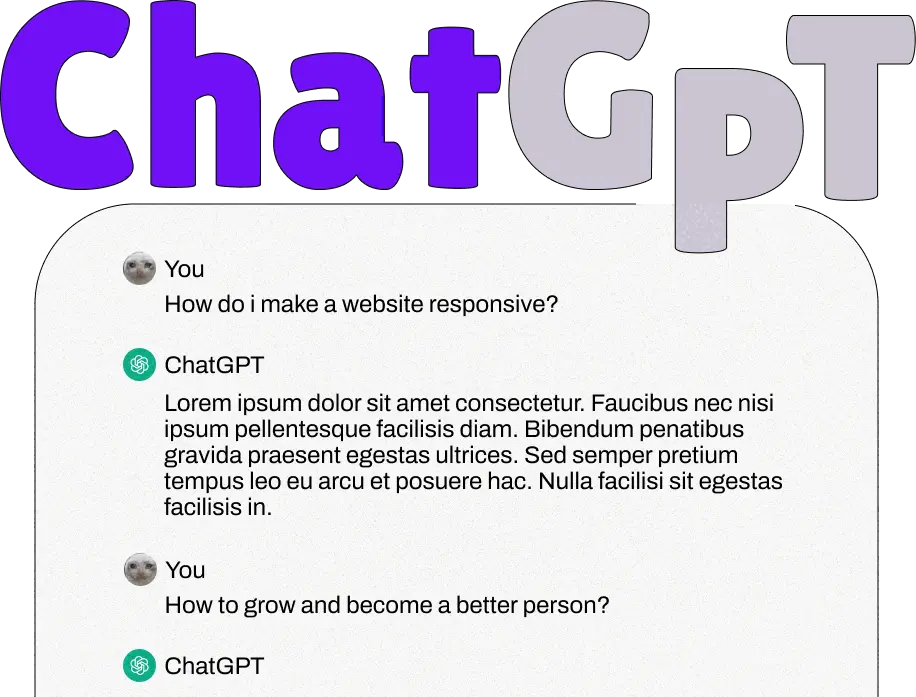

Portfolio Redesign 2024
- #CSS
- #HTML
- #Bootstrap
Background
2023 Dec - 2024 Jan
Fall 2023 i enrolled in a two-year frontend program and in preparation for my internship period in fall 2024 i wanted to revamp my old portfolio. What better way to demonstrate my skills than by taking on the challenge of building something meaningful myself?
Mission
Redesign my portfolio to reflect my personal style and use new stuff.
#note!
This isn't a formal case study. Think of it more as a personal blog post. No exhaustive research, just a
passionate endeavor to create a online space to showcase myself and my progress. Welcome to my digital
playground!
Phase 1
I built my previous portfolio during a two-and-a-half year UX program with vanilla html/css and while functional it wasn't very dynamic or interesting. Now equipped with much more frontend skills I wanted to give my portfolio a big refurbishing.
Flashback to my old portfolio.
It was time to bid farewell to the old and usher in the new. Aligning my digital presence with my personal style and essence. Certain elements like color and bold typography stayed but i wanted to add more dynamic content and subtle animations.
Phase 2
I decided to embrace Bootstrap for my portfolio redesign. It seemed like the perfect toolkit to enhance responsiveness which was a issue in my previous portfolio. Bootstrap's utility classes and components made it easy for me to style my html document and minimize the amount of code needed in my CSS files.

Stepping outside the realm of frameworks, I dived into the exciting world of design possibilities.
I wanted to strike a balance between keeping some stuff from my old portfolio, like the bright color schemes
and bold fonts and tossing in new elements, like dynamic content and subtle animations.
To get into the creative space, I checked out a bunch of online portfolios, soaking in ideas for layouts,
interactive features, and overall design.
.Action!
Phase 3
Since enrolling in my program i had gotten a much firmer grasp of html, css, javascript and Bootstrap so i sought to utilize these when redesigning my portfolio.
Technologies used:
- VScode for code editor.
- Bootstrap framework.
- Github for version management and pages hosting.
- Figma and Adobe Illustrator for creating graphic assets.
With this toolset i was able to deliver a visually dynamic website that properly showcased who I am.
.Toolbox
Phase 4
Directory of issues and problems!
I decided to use GitHub to host and manage my portfolio. I had very little
experience with GitHub prior to enrolling
in my program but i caught on fairly quick. I also discovered GitHub Pages and decided to host my
portfolio there.
I made the executive decision to use Bootstrap 5 for this project. It made the issue of
responsiveness much easier to tackle and lessened the amount of CSS lines needed to execute my
vision.
Bootstrap came with its own issues though that i wasn't entirely equipped to solve on my own which made me rely on google and chat-gpt a lot. One issue was the Bootstrap default styles. Eg. wanting to override a bs default background-color was a bit tricky for me but i solved it by adding a id tag to body so it made my selectors more specific.
Bootstrap came with its own issues though that i wasn't entirely equipped to solve on my own which made me rely on google and chat-gpt a lot. One issue was the Bootstrap default styles. Eg. wanting to override a bs default background-color was a bit tricky for me but i solved it by adding a id tag to body so it made my selectors more specific.
Later in development i decided to analyze how my website performed in terms
of
speed, accessibility and best practices using PageSpeed. I discovered that the header image i used was
VERY slow to load in fact none of my images were optimized or responsive and THAT was a problem.
I decided to convert all of my images into next-gen format webp,I reviewed all the recommendations from PageSpeed and made the necessary adjustments accordingly.
I decided to convert all of my images into next-gen format webp,I reviewed all the recommendations from PageSpeed and made the necessary adjustments accordingly.
ChatGPT - My...saviour?
Despite these challenges, each setback taught me something new and further propelled my skills. ChatGPT was a big help throughout the entire process and ChatGPT served as a technical mentor when i was unsure of how to solve a problem eg. how to implement responsiveness in my website it offered sound advice that made the task less daunting.
.Setbacks
Completion
Enrolling in the frontend program in the autumn of 2023 marked the beginning of this dev journey. The
mission was simple: redesign my portfolio
to not just showcase technical skills but to be a reflection of my growth and evolving style. What's
next? to delve deeper into web-development and learn more!
Current pagespeed results for desktop, mobile results are still iffy and are to be optimized. Moving forward this portfolio will be maintained and updated for the foreseeable future so stay tuned for more projects 😉